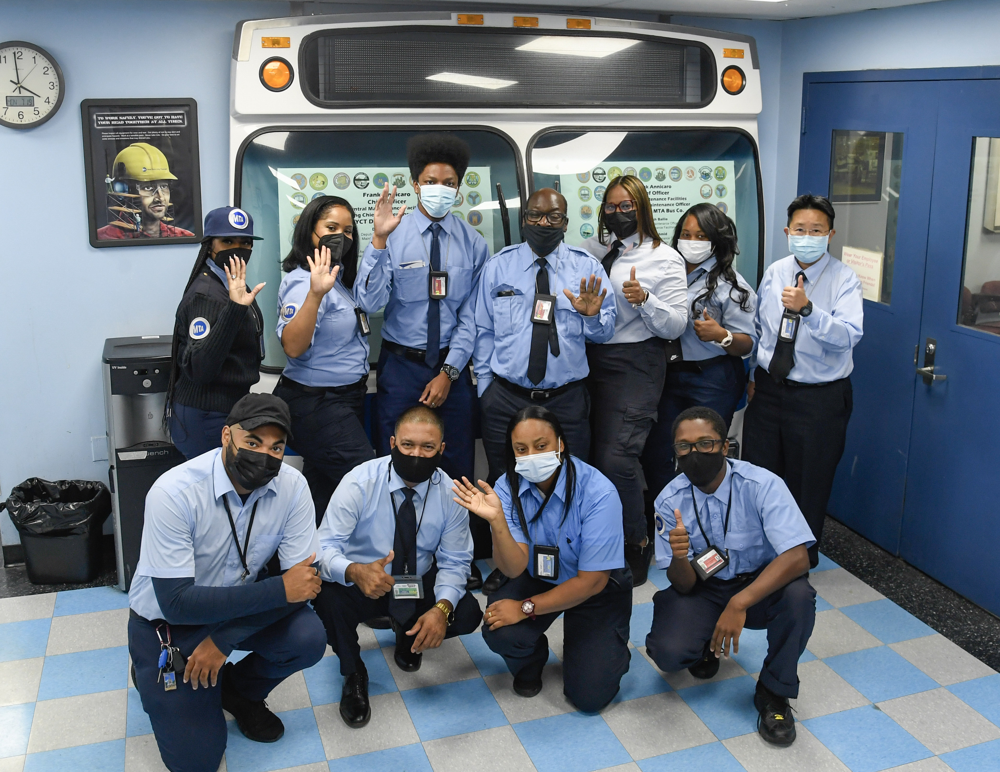
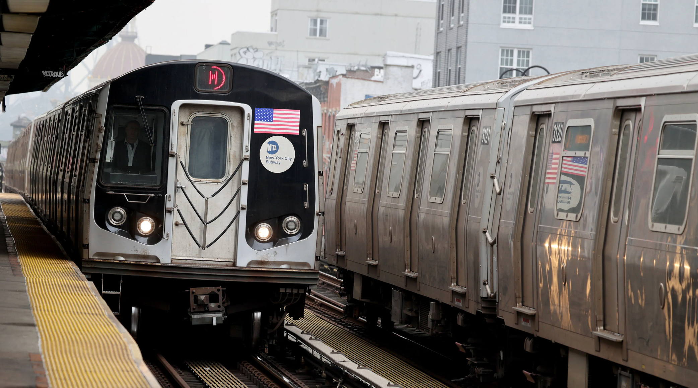
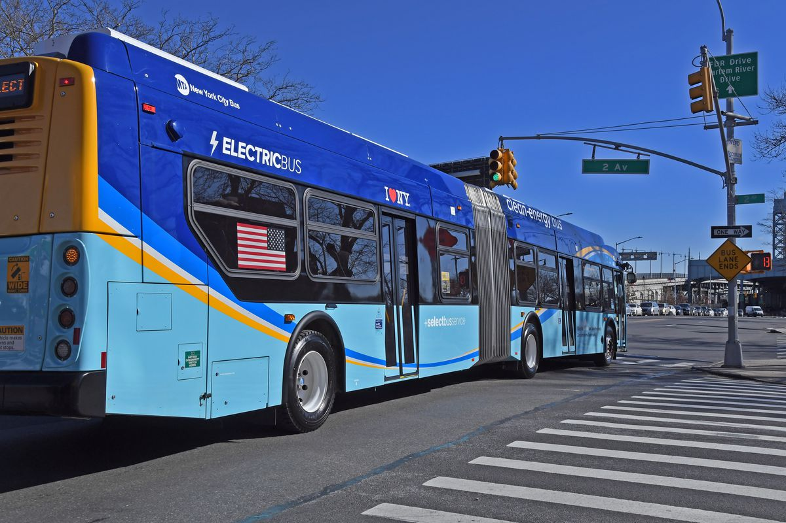

🗽 New York City Transit Overview
The New York City Transit Authority (NYCTA) operates one of the world’s largest public transportation systems, serving millions daily via subway and bus routes across the five boroughs.
🚇 Subway System
Image Source: MTA Official Website
📊 Quick Facts
- 472 subway stations across the city
- 2,500+ buses on 300 routes
- Over 5.5 million weekday subway riders
- Transit system operates 24/7
🎯 Our Mission
To deliver safe, reliable, and accessible public transportation to every resident and visitor of New York City.
🚍 Bus Services
NY Transit operates over 2,500 buses, covering nearly every corner of the five boroughs with frequent and affordable service.
Image Source: NYC Transit Bus Fleet
💼 Careers at MTA
Join a team that keeps New York moving. From train operators to IT specialists, the MTA offers exciting career opportunities.
- Competitive salaries and benefits
- Diverse and inclusive work culture
- Training and advancement programs
📅 Schedules & Timetables
Access real-time schedules for your subway and bus lines:
📷 Transit Gallery
A glimpse into the life of New York transit in motion.
Images from MTA photo archive (placeholders for class use)
📞 Contact Us
We’re here to help! Reach out to us through the following methods:
- Email: support@nytransit.gov
- Phone: 1-800-NY-TRANS
- Visit: 2 Broadway, New York, NY 10004